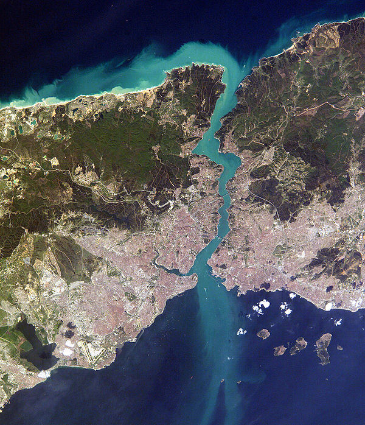

İstanbul
İstanbul. Yerleşimi
milattan çok önceki yıllara dayanan, birçok
imparatorluğun uğruna savaştığı, adına şarkılar ve kitaplar yazılan Dünya'daki sayılı
şehirlerden biri.
Karadeniz'i, Marmara Denizi'ni ve iki kıtayı birleştiren bir boğaza sahip olmasıyla jeopolitik konumu büyük önem taşımaktadır. İşte bu sebeplerden dolayı şu ana kadarki birçok imparatorluğun başkentliğini yapmış bir şehirdir. Gelen her imparatorluk da buraya geldiği zaman bu şehre yepyeni kültürler, tarihler ve yapılar bırakmıştır. Yapılardan bazıları Galata Kulesi, Topkapı Sarayı ve Ayasofya'dır. Dolayısıyla günümüzde de birçok etnik gruba sahiptir. Buraya geldiğinizde hem Türkiye'nin farklı şehirlerinden insanları hem de Dünya'nın farklı ülkelerinden insanları görebilirsiniz. Birçok dil burada bir araya gelmiştir.
Peki sadece insanlar mı burada bir araya gelmiştir? Hayır. Burası günümüzde pek olmasa da yine de birçok canlının göç yolu üzerinde bulunan bir yerdir. Birçok leyleğin , flamingoların , kırlangıçların yuvası olmuştur. Dahası, İstanbul sokak canlılarıyla buraya gelen turistlerin de ilgisini çekmektedir. Hemen hemen her gelen turist buradaki sokak hayvanlarının fotoğrafını çekmektedir ve hatta onları beslemektedir.
Şehrin nüfusu yaklaşık olarak 16 milyondur. Bu da İstanbul'u Avrupa'nın en kalabalık şehri, Dünya'nın da 15. en kalabalık şehri yapıyor. Nüfusun bu kadar fazla olmasının sebepleri tabi ki de buradaki iş, eğitim ve sağlık gibi önemli konulardaki olanakları. İstanbul Türkiye'deki en önemli hastanelerin, okulların ve Türkiye ekonomisinin merkezidir. Diğer yandan , bu kadar kalabalık olmasının getirdiği olumsuz sonuçları ise gürültü, stres ve kirlilik. Herkesin bildiği ve çoğu İstanbullu insanı strese sokan konu: İstanbul trafiği. Özellikle sabah saatleri ve iş çıkış saatleri olmak üzere İstanbul'da bir yerden bir yere gitmek tamamen bir dert. Lise yıllarımda kar yağdığı bir gün yaklaşık 10 km uzaklıkta olan okuluma gitmek 3 saat sürmüştü. Buradan da anlaşılacağı üzere İstanbul'a ziyarete gelecek olursanız mutlaka o günün en az 1.5-2 saatini trafiğe ayırmalısınız.
Karadeniz'i, Marmara Denizi'ni ve iki kıtayı birleştiren bir boğaza sahip olmasıyla jeopolitik konumu büyük önem taşımaktadır. İşte bu sebeplerden dolayı şu ana kadarki birçok imparatorluğun başkentliğini yapmış bir şehirdir. Gelen her imparatorluk da buraya geldiği zaman bu şehre yepyeni kültürler, tarihler ve yapılar bırakmıştır. Yapılardan bazıları Galata Kulesi, Topkapı Sarayı ve Ayasofya'dır. Dolayısıyla günümüzde de birçok etnik gruba sahiptir. Buraya geldiğinizde hem Türkiye'nin farklı şehirlerinden insanları hem de Dünya'nın farklı ülkelerinden insanları görebilirsiniz. Birçok dil burada bir araya gelmiştir.
Peki sadece insanlar mı burada bir araya gelmiştir? Hayır. Burası günümüzde pek olmasa da yine de birçok canlının göç yolu üzerinde bulunan bir yerdir. Birçok leyleğin , flamingoların , kırlangıçların yuvası olmuştur. Dahası, İstanbul sokak canlılarıyla buraya gelen turistlerin de ilgisini çekmektedir. Hemen hemen her gelen turist buradaki sokak hayvanlarının fotoğrafını çekmektedir ve hatta onları beslemektedir.
Şehrin nüfusu yaklaşık olarak 16 milyondur. Bu da İstanbul'u Avrupa'nın en kalabalık şehri, Dünya'nın da 15. en kalabalık şehri yapıyor. Nüfusun bu kadar fazla olmasının sebepleri tabi ki de buradaki iş, eğitim ve sağlık gibi önemli konulardaki olanakları. İstanbul Türkiye'deki en önemli hastanelerin, okulların ve Türkiye ekonomisinin merkezidir. Diğer yandan , bu kadar kalabalık olmasının getirdiği olumsuz sonuçları ise gürültü, stres ve kirlilik. Herkesin bildiği ve çoğu İstanbullu insanı strese sokan konu: İstanbul trafiği. Özellikle sabah saatleri ve iş çıkış saatleri olmak üzere İstanbul'da bir yerden bir yere gitmek tamamen bir dert. Lise yıllarımda kar yağdığı bir gün yaklaşık 10 km uzaklıkta olan okuluma gitmek 3 saat sürmüştü. Buradan da anlaşılacağı üzere İstanbul'a ziyarete gelecek olursanız mutlaka o günün en az 1.5-2 saatini trafiğe ayırmalısınız.
| Galata Kulesi | Kız Kulesi | Topkapı Sarayı | Ayasofya |
|---|---|---|---|
| İstanbul'da en çok turist çeken tarihi yerlerden biridir. İlk olarak Cenevizler tarafından yaptırılmıştır. Asıl amacı yangın gözetleme kulesiydi ama zaman geçtikçe turistik bir yapı olmuştur. Hezarfen Ahmet Çelebi bu kulenin tepesinden atlayarak yapay kanat vasıtasıyla uçmuştur. | a2 | a3 | a4 |